Code
knitr::opts_chunk$set(echo = TRUE, warning = FALSE, StringsAsFActors= FALSE)knitr::opts_chunk$set(echo = TRUE, warning = FALSE, StringsAsFActors= FALSE)Update: For the final blog post, I have decided to focus on Sentiment Analysis and any correlation to Twitter Data. This post builds on previous blog posts and a more detailed analysis on sentiments from Twitter Data
This project analyzes Twitter engagement of specific Massachusetts Governor Candidates namely Maura Healey and Geoff Diehl.
CORPUS: Extracted twitter replies (Oct 29 to Nov 4) from all of Healey and Diehl’s tweets. The replies looks into how these candidates engages other twitter users by generating a response to their original tweet or retweet.
The replies are then cleaned and pre-processed.
Analysis:
Initial Data visualization (word cloud)
TF-IDF
Semantic Network Analysis
Sentiment Analysis + Polarity
library(readr)
library(dplyr)
Attaching package: 'dplyr'The following objects are masked from 'package:stats':
filter, lagThe following objects are masked from 'package:base':
intersect, setdiff, setequal, unionlibrary(quanteda)Package version: 3.2.3
Unicode version: 13.0
ICU version: 69.1Parallel computing: 8 of 8 threads used.See https://quanteda.io for tutorials and examples.library(quanteda.textstats)
library(quanteda.textplots)
library(ggplot2)
library(DT)
library(tm)Loading required package: NLP
Attaching package: 'NLP'The following object is masked from 'package:ggplot2':
annotateThe following objects are masked from 'package:quanteda':
meta, meta<-
Attaching package: 'tm'The following object is masked from 'package:quanteda':
stopwordslibrary(stringr)
library(tidyverse)── Attaching packages
───────────────────────────────────────
tidyverse 1.3.2 ──✔ tibble 3.1.8 ✔ purrr 0.3.5
✔ tidyr 1.2.1 ✔ forcats 0.5.2
── Conflicts ────────────────────────────────────────── tidyverse_conflicts() ──
✖ NLP::annotate() masks ggplot2::annotate()
✖ dplyr::filter() masks stats::filter()
✖ dplyr::lag() masks stats::lag()library(tidytext)
library(plyr)------------------------------------------------------------------------------
You have loaded plyr after dplyr - this is likely to cause problems.
If you need functions from both plyr and dplyr, please load plyr first, then dplyr:
library(plyr); library(dplyr)
------------------------------------------------------------------------------
Attaching package: 'plyr'
The following object is masked from 'package:purrr':
compact
The following objects are masked from 'package:dplyr':
arrange, count, desc, failwith, id, mutate, rename, summarise,
summarizelibrary(tidyverse)
library(quanteda.textmodels)
library(devtools)Loading required package: usethislibrary(caret)Loading required package: lattice
Attaching package: 'caret'
The following object is masked from 'package:purrr':
liftlibrary(e1071)
library(quanteda.dictionaries)
#library(devtools)
#devtools::install_github("kbenoit/quanteda.dictionaries")
library(quanteda.dictionaries)
library(syuzhet)
#remotes::install_github("quanteda/quanteda.sentiment")
library(quanteda.sentiment)
Attaching package: 'quanteda.sentiment'
The following object is masked from 'package:quanteda':
data_dictionary_LSD2015library(lubridate)
Attaching package: 'lubridate'
The following objects are masked from 'package:base':
date, intersect, setdiff, unionHealy <- read_csv("Healy.csv")Rows: 1900 Columns: 79
── Column specification ────────────────────────────────────────────────────────
Delimiter: ","
chr (33): edit_history_tweet_ids, text, lang, source, reply_settings, entit...
dbl (18): id, conversation_id, referenced_tweets.replied_to.id, referenced_...
lgl (24): referenced_tweets.retweeted.id, edit_controls.is_edit_eligible, r...
dttm (4): edit_controls.editable_until, created_at, author.created_at, __tw...
ℹ Use `spec()` to retrieve the full column specification for this data.
ℹ Specify the column types or set `show_col_types = FALSE` to quiet this message.Healy$text <- gsub("@[[:alpha:]]*","", Healy$text) #remove Twitter handles
Healy$text <- gsub("&", "", Healy$text)
Healy$text <- gsub("healey", "", Healy$text)
Healy$text <- gsub("_", "", Healy$text)Healy_corpus <- Corpus(VectorSource(Healy$text))
Healy_corpus <- tm_map(Healy_corpus, tolower) #lowercase
Healy_corpus <- tm_map(Healy_corpus, removeWords,c("s","healey", "healy","vote", "votes","voted","Voter","maura","rt", "amp",(stopwords("english"))))
Healy_corpus <- tm_map(Healy_corpus, removePunctuation)
Healy_corpus <- tm_map(Healy_corpus, stripWhitespace)
Healy_corpus <- tm_map(Healy_corpus, removeNumbers)Healy_corpus <- corpus(Healy_corpus,text_field = "text")
Healy_text_df <- as.data.frame(Healy_corpus)
Healy_tokens <- tokens(Healy_corpus)
Healy_tokens <- tokens_wordstem(Healy_tokens)
print(Healy_tokens)Tokens consisting of 1,900 documents.
text1 :
[1] "four" "day" "nov" "th" "best"
[6] "pitchnnfor" "starter" "abort" "fulli" "protect"
[11] "ma" "chang"
[ ... and 14 more ]
text2 :
[1] "reproduct" "freedom" "protect" "ma" "sent"
[6] "back" "state" "…" "belong" "ag"
[11] "understand"
text3 :
[1] "serious" "state" "'" "follow" "scienc"
[6] "'" "w" "experiment" "drug" "young"
[11] "femal" "'"
[ ... and 12 more ]
text4 :
[1] "preserv" "democraci" "come" "man"
text5 :
[1] "protect" "kid" "mean" "vote"
text6 :
[1] "like" "serious" "guy" "republican"
[5] "fix" "anyth" "claim" "abl"
[9] "just" "gonna" "pull" "sociallyconserv"
[ ... and 10 more ]
[ reached max_ndoc ... 1,894 more documents ]dfm(Healy_tokens)Document-feature matrix of: 1,900 documents, 3,683 features (99.79% sparse) and 0 docvars.
features
docs four day nov th best pitchnnfor starter abort fulli protect
text1 1 1 1 1 1 1 1 1 1 1
text2 0 0 0 0 0 0 0 0 0 1
text3 0 0 0 0 0 0 0 0 0 2
text4 0 0 0 0 0 0 0 0 0 0
text5 0 0 0 0 0 0 0 0 0 1
text6 0 0 0 0 0 0 0 0 0 0
[ reached max_ndoc ... 1,894 more documents, reached max_nfeat ... 3,673 more features ]# create a full dfm for comparison---use this to append to polarity
Healy_Dfm <- tokens(Healy_tokens,
remove_punct = TRUE,
remove_symbols = TRUE,
remove_numbers = TRUE,
remove_url = TRUE,
split_hyphens = FALSE,
split_tags = FALSE,
include_docvars = TRUE) %>%
tokens_tolower() %>%
dfm(remove = stopwords('english')) %>%
dfm_trim(min_termfreq = 10, verbose = FALSE) %>%
dfm()topfeatures(Healy_Dfm) will go peopl state like democrat right just
124 123 117 114 100 96 93 89
elect vote
89 88 Healy_tf_dfm <- dfm_tfidf(Healy_Dfm, force = TRUE) #create a new DFM by tf-idf scores
topfeatures(Healy_tf_dfm) ## this shows top words by tf-idf will go state peopl like democrat right elect
152.9454 151.2329 145.2853 145.2353 132.4511 127.6189 125.0157 121.0111
vote just
120.5836 119.1919 # convert corpus to dfm using the dictionary---use to append ???
HealyDfm_nrc <- tokens(Healy_tokens,
remove_punct = TRUE,
remove_symbols = TRUE,
remove_numbers = TRUE,
remove_url = TRUE,
split_tags = FALSE,
split_hyphens = FALSE,
include_docvars = TRUE) %>%
tokens_tolower() %>%
dfm(remove = stopwords('english')) %>%
dfm_trim(min_termfreq = 10, verbose = FALSE) %>%
dfm() %>%
dfm_lookup(data_dictionary_NRC)library(RColorBrewer)
textplot_wordcloud(Healy_Dfm, scale=c(5,1), max.words=40, random.order=FALSE, rot.per=0.35, use.r.layout=FALSE, colors=brewer.pal(8, "Dark2"))# DFM that contains hashtags
Healytag_dfm <- dfm_select(Healy_Dfm, pattern = "#*")
Healytoptag <- names(topfeatures(Healy_Dfm, 30))
head(Healytoptag)[1] "will" "go" "peopl" "state" "like" "democrat"Healytag_fcm <- fcm(Healy_Dfm, context = "document", tri = FALSE)
head(Healytag_fcm)Feature co-occurrence matrix of: 6 by 334 features.
features
features day th best abort protect ma chang two just anyth
day 3 1 2 1 1 3 1 1 9 1
th 1 0 1 2 1 2 1 1 1 1
best 2 1 0 1 2 2 1 1 1 1
abort 1 2 1 0 1 2 1 1 1 1
protect 1 1 2 1 4 3 1 1 2 1
ma 3 2 2 2 3 1 2 3 5 2
[ reached max_nfeat ... 324 more features ]#Visualization of semantic network based on hashtag co-occurrence
Healytopgat_fcm <- fcm_select(Healytag_fcm, pattern = Healytoptag)
textplot_network(Healytopgat_fcm, min_freq = 1.2,
omit_isolated = TRUE,
edge_color = "#1F78B4",
edge_alpha = 0.5,
edge_size = 2,
vertex_color = "black",
vertex_size = 2,
vertex_labelcolor = NULL,
vertex_labelfont = NULL,
vertex_labelsize = 8,
offset = NULL)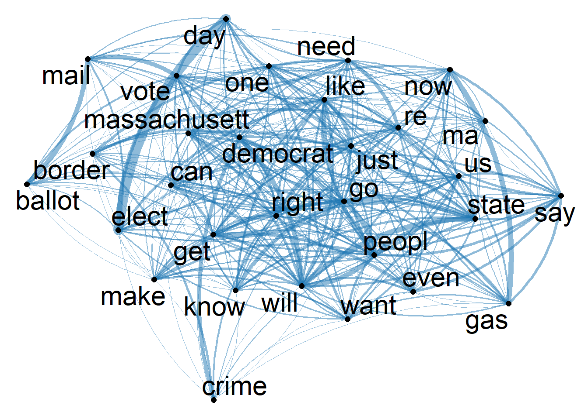
textplot_network(Healytopgat_fcm, vertex_labelsize = 3 * rowSums(Healytopgat_fcm)/min(rowSums(Healytopgat_fcm)))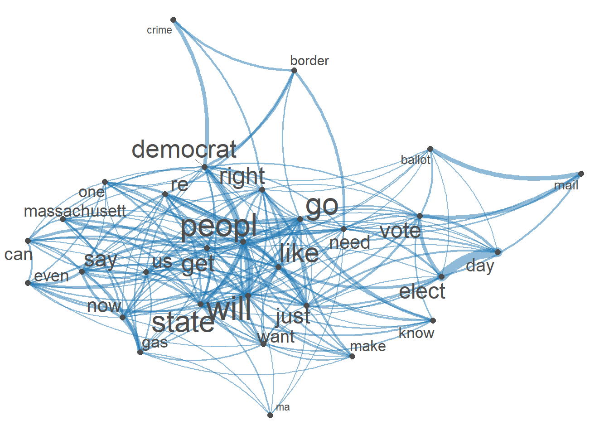
H_csv <- as.data.frame((cbind(Healy,Healy_text_df)))
write_csv(H_csv,"H_csv")H_Sentiment <- get_nrc_sentiment(H_csv$Healy_corpus) H_all_senti <- cbind(H_Sentiment, H_csv) #Combine sentiment ratings to create a new data framesummary(H_Sentiment) anger anticipation disgust fear
Min. :0.0000 Min. :0.0000 Min. :0.0000 Min. :0.0000
1st Qu.:0.0000 1st Qu.:0.0000 1st Qu.:0.0000 1st Qu.:0.0000
Median :0.0000 Median :0.0000 Median :0.0000 Median :0.0000
Mean :0.2911 Mean :0.3284 Mean :0.2158 Mean :0.3342
3rd Qu.:0.0000 3rd Qu.:1.0000 3rd Qu.:0.0000 3rd Qu.:0.0000
Max. :5.0000 Max. :5.0000 Max. :4.0000 Max. :4.0000
joy sadness surprise trust
Min. :0.0000 Min. :0.0000 Min. :0.00 Min. :0.0000
1st Qu.:0.0000 1st Qu.:0.0000 1st Qu.:0.00 1st Qu.:0.0000
Median :0.0000 Median :0.0000 Median :0.00 Median :0.0000
Mean :0.2511 Mean :0.2547 Mean :0.16 Mean :0.4489
3rd Qu.:0.0000 3rd Qu.:0.0000 3rd Qu.:0.00 3rd Qu.:1.0000
Max. :4.0000 Max. :4.0000 Max. :3.00 Max. :7.0000
negative positive
Min. :0.0000 Min. :0.0000
1st Qu.:0.0000 1st Qu.:0.0000
Median :0.0000 Median :0.0000
Mean :0.5837 Mean :0.7026
3rd Qu.:1.0000 3rd Qu.:1.0000
Max. :6.0000 Max. :7.0000 ##POLARITY SCORES??
# POLARITY
H_all_senti$polarity <- (H_all_senti$positive - H_all_senti$negative)/(H_all_senti$positive + H_all_senti$negative)
H_all_senti$polarity[(H_all_senti$positive + H_all_senti$negative) == 0] <- 0
ggplot(H_all_senti) +
geom_histogram(aes(x=polarity)) +
theme_bw()`stat_bin()` using `bins = 30`. Pick better value with `binwidth`.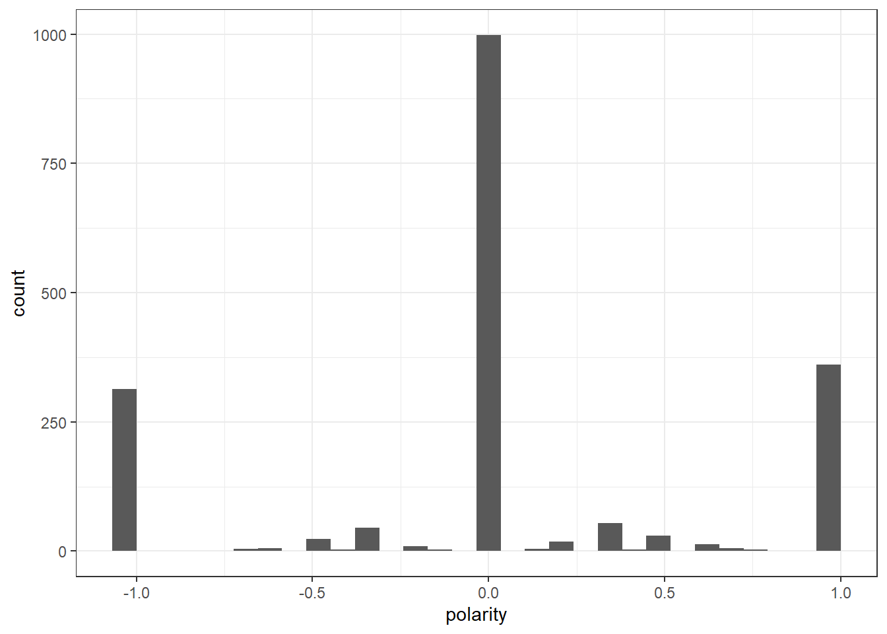
datatable(H_all_senti[1:50,], options = list(pageLength = 5)) #convert cleaned Healy_tokens back tp corpus for sentiment analysis
Healy_corpus <- corpus(as.character(Healy_tokens))# use liwcalike() to estimate sentiment using NRC dictionary
HealyTweetSentiment_nrc <- liwcalike(Healy_corpus, data_dictionary_NRC)
names(HealyTweetSentiment_nrc) [1] "docname" "Segment" "WPS" "WC" "Sixltr"
[6] "Dic" "anger" "anticipation" "disgust" "fear"
[11] "joy" "negative" "positive" "sadness" "surprise"
[16] "trust" "AllPunc" "Period" "Comma" "Colon"
[21] "SemiC" "QMark" "Exclam" "Dash" "Quote"
[26] "Apostro" "Parenth" "OtherP" HealyTweetSentiment_nrc_viz <- HealyTweetSentiment_nrc %>%
select(c("anger", "anticipation", "disgust", "fear","joy","sadness", "surprise","trust","positive","negative"))Healy_tr<-data.frame(t(HealyTweetSentiment_nrc_viz)) #transposeHealy_tr_new <- data.frame(rowSums(Healy_tr[2:1900]))
Healy_tr_mean <- data.frame(rowMeans(Healy_tr[2:1900]))#get mean of sentiment values
names(Healy_tr_new)[1] <- "Count"
Healy_tr_new <- cbind("sentiment" = rownames(Healy_tr_new), Healy_tr_new)
rownames(Healy_tr_new) <- NULL
Healy_tr_new2<-Healy_tr_new[1:8,]write_csv(Healy_tr_new2,"Healy-Sentiments")
write_csv(Healy_tr_new,"Healy-8 Sentiments")#Plot One - Count of words associated with each sentiment
quickplot(sentiment, data=Healy_tr_new2, weight=Count, geom="bar", fill=sentiment, ylab="count")+ggtitle("Emotions of REPLIES to Maura Healey Tweets")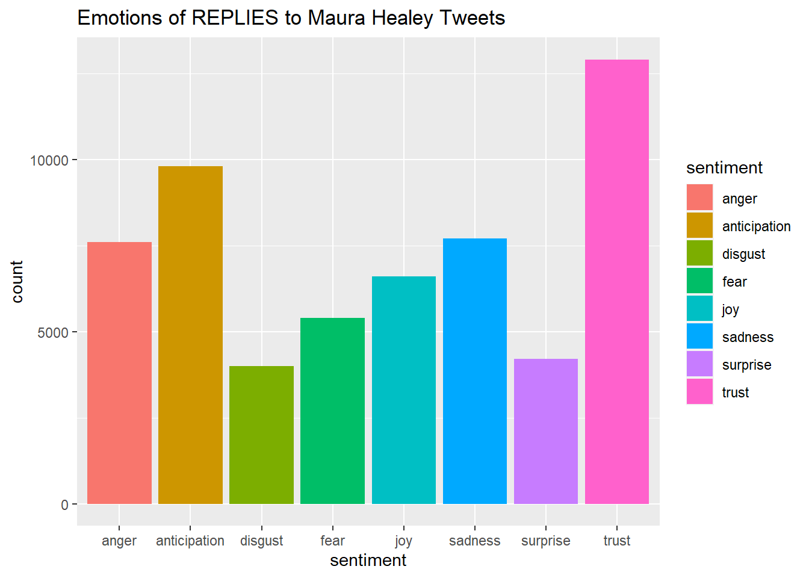
names(Healy_tr_mean)[1] <- "Mean"
Healy_tr_mean <- cbind("sentiment" = rownames(Healy_tr_mean), Healy_tr_mean)
rownames(Healy_tr_mean) <- NULL
Healy_tr_mean2<-Healy_tr_mean[9:10,]
write_csv(Healy_tr_mean2,"Healy-Mean Sentiments")#Plot One - Count of words associated with each sentiment
quickplot(sentiment, data=Healy_tr_mean2, weight=Mean, geom="bar", fill=sentiment, ylab="Mean Sentiment Score")+ggtitle("Mean Sentiment Scores to Maura Healey Tweets")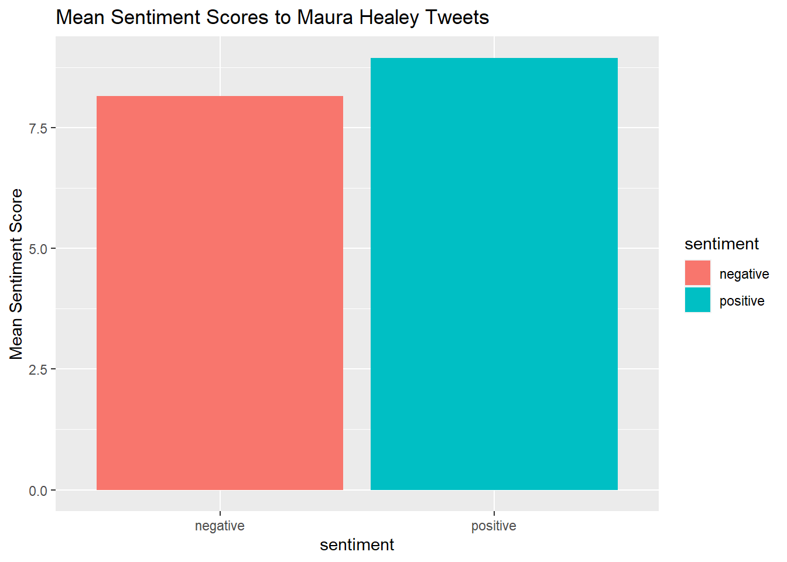
Diehl <- read_csv("Diehl.csv")Rows: 497 Columns: 79
── Column specification ────────────────────────────────────────────────────────
Delimiter: ","
chr (34): edit_history_tweet_ids, text, lang, source, reply_settings, entit...
dbl (18): id, conversation_id, referenced_tweets.replied_to.id, referenced_...
lgl (23): referenced_tweets.retweeted.id, edit_controls.is_edit_eligible, r...
dttm (4): edit_controls.editable_until, created_at, author.created_at, __tw...
ℹ Use `spec()` to retrieve the full column specification for this data.
ℹ Specify the column types or set `show_col_types = FALSE` to quiet this message.Diehl$text <- gsub("@[[:alpha:]]*","", Diehl$text) #remove Twitter handles
Diehl$text <- gsub("&", "", Diehl$text)
Diehl$text <- gsub("_", "", Diehl$text)Diehl_corpus <- Corpus(VectorSource(Diehl$text))
Diehl_corpus <- tm_map(Diehl_corpus, tolower) #lowercase
Diehl_corpus <- tm_map(Diehl_corpus, removeWords,
c("s","geoff", "diehl","rt", "Vote","voter","voted", "amp"))
Diehl_corpus <- tm_map(Diehl_corpus, removeWords,
stopwords("english"))
Diehl_corpus <- tm_map(Diehl_corpus, removePunctuation)
Diehl_corpus <- tm_map(Diehl_corpus, stripWhitespace)
Diehl_corpus <- tm_map(Diehl_corpus, removeNumbers)
Diehl_corpus <- corpus(Diehl_corpus,text_field = "text")
Diehl_text_df <- as.data.frame(Diehl_corpus)Diehl_tokens <- tokens(Diehl_corpus)
Diehl_tokens <- tokens_wordstem(Diehl_tokens)
print(Diehl_tokens)Tokens consisting of 497 documents.
text1 :
[1] "still" "beat" "fascism" "day" "week" "📴"
text2 :
[1] "wear" "mask" "'" "re" "dumb"
text3 :
[1] "'" "mention" "mask" "pay" "compani" "can" "charg"
[8] "whatev" "want" "follow" "'" "ll"
[ ... and 10 more ]
text4 :
[1] "argument" "gas" "pipelin" "energi" "independ" "right"
[7] "now" "new" "england" "get" "lng" "deliveri"
[ ... and 18 more ]
text5 :
[1] "shit" "u" "dumb" "masker" "democrat" "still"
[7] "fuck" "everyon" "caus" "price" "hike" "higher"
[ ... and 7 more ]
text6 :
[1] "compani" "take" "profit" "loss" "kinder" "morgan"
[7] "elect" "need" "proof" "energi" "independ" "way"
[ ... and 7 more ]
[ reached max_ndoc ... 491 more documents ]dfm(Diehl_tokens)Document-feature matrix of: 497 documents, 1,921 features (99.49% sparse) and 0 docvars.
features
docs still beat fascism day week📴 wear mask ' re
text1 1 1 1 1 1 1 0 0 0 0
text2 0 0 0 0 0 0 1 1 1 1
text3 0 0 0 0 0 0 0 1 2 0
text4 0 0 0 0 0 0 0 0 0 0
text5 1 0 0 0 0 0 0 0 0 0
text6 0 0 0 0 0 0 0 0 0 0
[ reached max_ndoc ... 491 more documents, reached max_nfeat ... 1,911 more features ]# create a full dfm for comparison---use this to append to polarity
Diehl_Dfm <- tokens(Diehl_tokens,
remove_punct = TRUE,
remove_symbols = TRUE,
remove_numbers = TRUE,
remove_url = TRUE,
split_hyphens = FALSE,
split_tags = FALSE,
include_docvars = TRUE) %>%
tokens_tolower() %>%
dfm(remove = stopwords('english')) %>%
dfm_trim(min_termfreq = 10, verbose = FALSE) %>%
dfm()topfeatures(Diehl_Dfm)school go vote like will get healey public know just
54 47 46 43 43 39 39 35 32 32 Diehl_tf_dfm <- dfm_tfidf(Diehl_Dfm, force = TRUE) #create a new DFM by tf-idf scores
topfeatures(Diehl_tf_dfm) ## this shows top words by tf-idf school go vote like will get healey public
61.56291 50.43603 49.84434 46.14361 46.14361 44.46210 44.46210 43.18854
know just
39.97435 39.48667 # convert corpus to dfm using the dictionary---use to append
DiehlDfm_nrc <- tokens(Diehl_tokens,
remove_punct = TRUE,
remove_symbols = TRUE,
remove_numbers = TRUE,
remove_url = TRUE,
split_tags = FALSE,
split_hyphens = FALSE,
include_docvars = TRUE) %>%
tokens_tolower() %>%
dfm(remove = stopwords('english')) %>%
dfm_trim(min_termfreq = 6, verbose = FALSE) %>%
dfm() %>%
dfm_lookup(data_dictionary_NRC)
dim(DiehlDfm_nrc)[1] 497 10head(DiehlDfm_nrc, 10)Document-feature matrix of: 10 documents, 10 features (66.00% sparse) and 0 docvars.
features
docs anger anticipation disgust fear joy negative positive sadness surprise
text1 0 0 0 0 0 0 0 0 0
text2 0 0 0 0 0 1 0 0 0
text3 1 2 0 0 2 2 2 1 1
text4 1 3 0 0 1 0 3 0 1
text5 0 0 0 0 0 2 0 1 0
text6 0 0 0 0 0 0 2 0 0
features
docs trust
text1 0
text2 0
text3 2
text4 1
text5 0
text6 2
[ reached max_ndoc ... 4 more documents ]library(RColorBrewer)
textplot_wordcloud(Diehl_Dfm, scale=c(5,1), max.words=40, random.order=FALSE, rot.per=0.35, use.r.layout=FALSE, colors=brewer.pal(8, "Dark2"))Diehltag_dfm <- dfm_select(Diehl_Dfm, pattern = "#*")
Diehltoptag <- names(topfeatures(Diehl_Dfm, 30))
head(Diehltoptag)[1] "school" "go" "vote" "like" "will" "get" Diehltag_fcm <- fcm(Diehl_Dfm)
head(Diehltag_fcm)Feature co-occurrence matrix of: 6 by 74 features.
features
features re can want see vote like gas energi right now
re 1 0 2 0 0 1 0 1 4 0
can 0 1 3 1 4 3 2 2 2 2
want 0 0 4 1 2 3 0 0 4 3
see 0 0 0 1 5 3 0 0 0 0
vote 0 0 0 0 5 4 0 1 1 2
like 0 0 0 0 0 1 1 1 2 3
[ reached max_nfeat ... 64 more features ]#Visualization of semantic network based on hashtag co-occurrence
Diehltopgat_fcm <- fcm_select(Diehltag_fcm, pattern = Diehltoptag)
textplot_network(Diehltopgat_fcm, min_freq = 1.2,
omit_isolated = TRUE,
edge_color = "#1F78B4",
edge_alpha = 0.4,
edge_size = 2,
vertex_color = "#4D4D4D",
vertex_size = 2,
vertex_labelcolor = NULL,
vertex_labelfont = NULL,
vertex_labelsize = 7,
offset = NULL)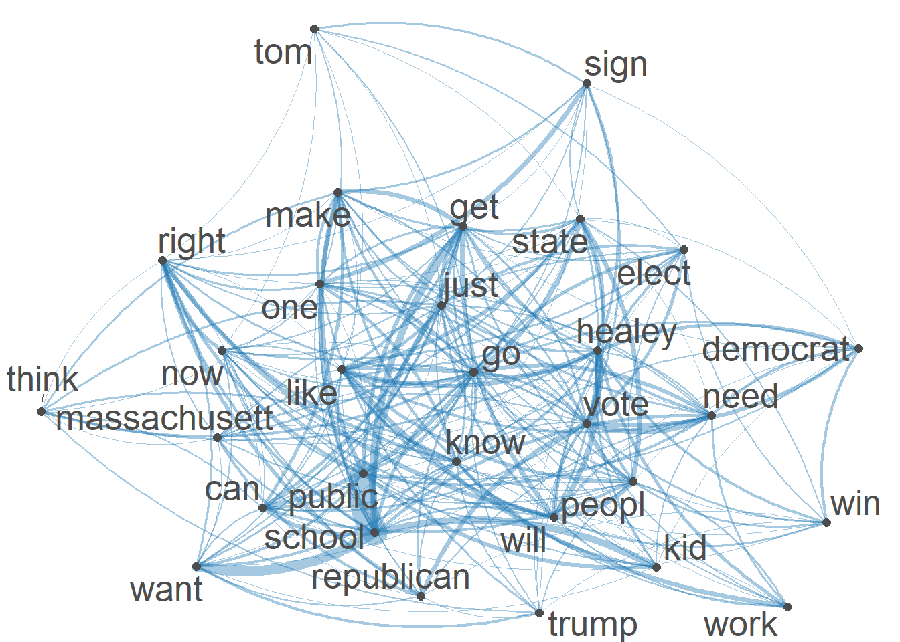
fcm_select(Diehltopgat_fcm, pattern = Diehltoptag) %>%
textplot_network(min_freq = 0.7, vertex_labelcolor = rep(c('black', NA), 15),vertex_labelsize = 6)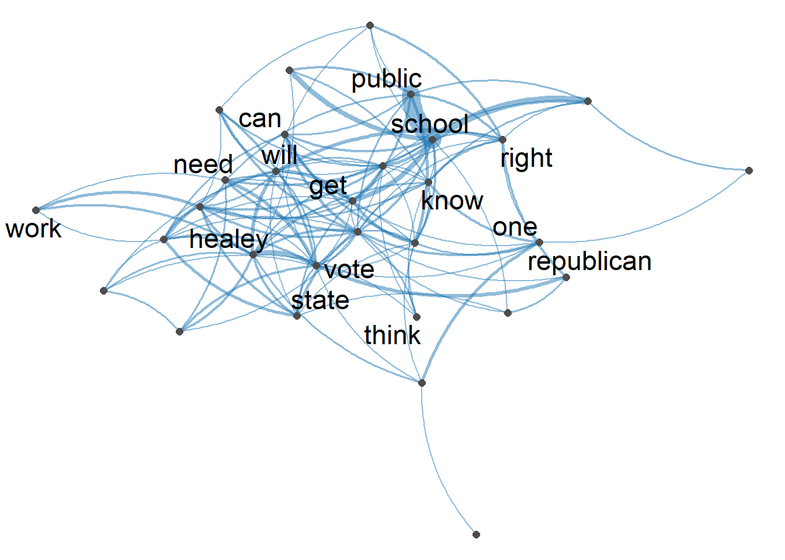
D_csv <- as.data.frame((cbind(Diehl,Diehl_text_df)))
write_csv(D_csv,"D_csv")#convert cleaned Diehl_tokens back tp corpus for sentiment analysis
Diehl_corpus <- corpus(as.character(Diehl_tokens))
# use liwcalike() to estimate sentiment using NRC dictionary
DiehlTweetSentiment_nrc <- liwcalike(Diehl_corpus, data_dictionary_NRC)
names(DiehlTweetSentiment_nrc) [1] "docname" "Segment" "WPS" "WC" "Sixltr"
[6] "Dic" "anger" "anticipation" "disgust" "fear"
[11] "joy" "negative" "positive" "sadness" "surprise"
[16] "trust" "AllPunc" "Period" "Comma" "Colon"
[21] "SemiC" "QMark" "Exclam" "Dash" "Quote"
[26] "Apostro" "Parenth" "OtherP" DiehlTweetSentiment_nrc_viz <- DiehlTweetSentiment_nrc %>%
select(c("anger", "anticipation", "disgust", "fear","joy","sadness", "surprise","trust","positive","negative"))
Diehl_tr<-data.frame(t(DiehlTweetSentiment_nrc_viz)) #transpose
Diehl_tr_new <- data.frame(rowSums(Diehl_tr[2:497]))
Diehl_tr_mean <- data.frame(rowMeans(Diehl_tr[2:497]))#get mean of sentiment values
names(Diehl_tr_new)[1] <- "Count"
Diehl_tr_new <- cbind("sentiment" = rownames(Diehl_tr_new), Diehl_tr_new)
rownames(Diehl_tr_new) <- NULL
Diehl_tr_new2<-Diehl_tr_new[1:8,]
write_csv(Diehl_tr_new2,"Diehl- 8 Sentiments")#Plot One - Count of words associated with each sentiment
quickplot(sentiment, data=Diehl_tr_new2, weight=Count, geom="bar", fill=sentiment, ylab="count")+ggtitle("Emotions to REPLIES Geoff Diehl Tweets")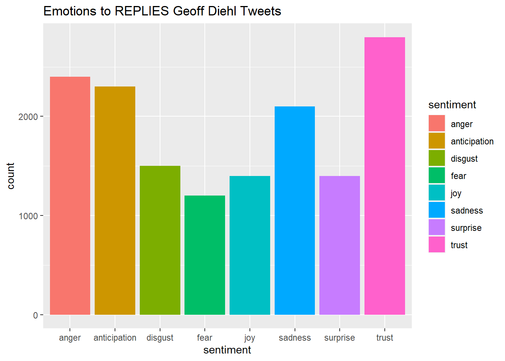
names(Diehl_tr_mean)[1] <- "Mean"
Diehl_tr_mean <- cbind("sentiment" = rownames(Diehl_tr_mean), Diehl_tr_mean)
rownames(Diehl_tr_mean) <- NULL
Diehl_tr_mean2<-Diehl_tr_mean[9:10,]
write_csv(Diehl_tr_mean2,"Diehl -Mean Sentiments")#Plot One - Count of words associated with each sentiment
quickplot(sentiment, data=Diehl_tr_mean2, weight=Mean, geom="bar", fill=sentiment, ylab="Mean Sentiment Score")+ggtitle("Mean Sentiment Scores to Geoff Diehl Tweets")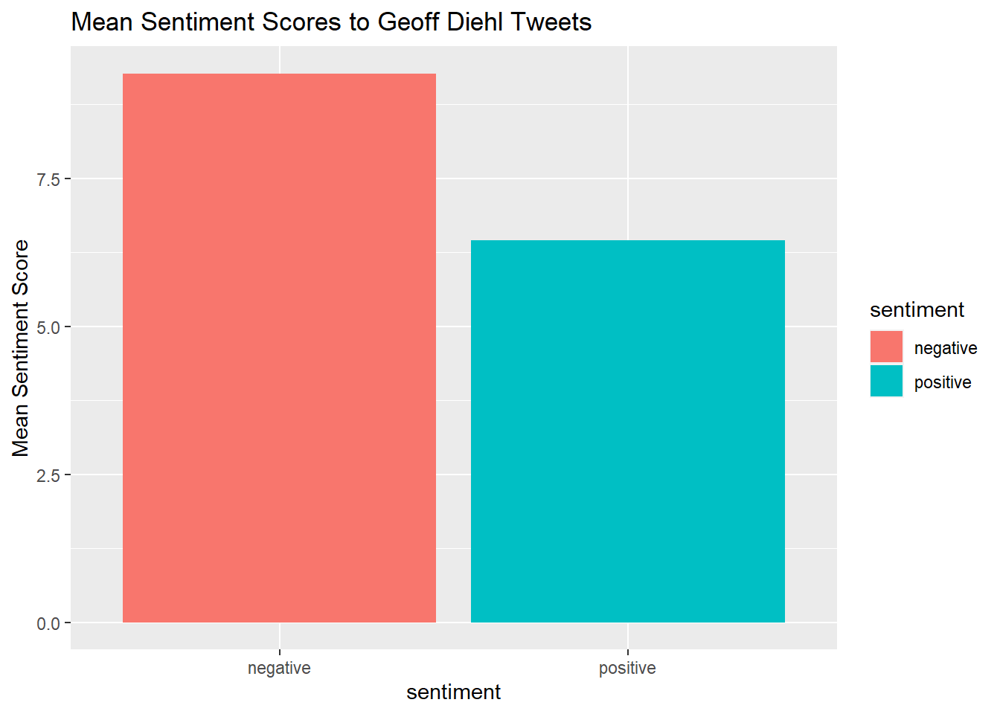
Diehldf_nrc <- convert(DiehlDfm_nrc, to = "data.frame")
write_csv(Diehldf_nrc, "Diehl- Polarity Scores")
Diehldf_nrc$polarity <- (Diehldf_nrc$positive - Diehldf_nrc$negative)/(Diehldf_nrc$positive + Diehldf_nrc$negative)
Diehldf_nrc$polarity[(Diehldf_nrc$positive + Diehldf_nrc$negative) == 0] <- 0
ggplot(Diehldf_nrc) +
geom_histogram(aes(x=polarity)) +
theme_bw()`stat_bin()` using `bins = 30`. Pick better value with `binwidth`.
Diehl_text_df <-as.data.frame(Diehl_text_df)
DiehlCorpus_Polarity <-as.data.frame((cbind(Diehldf_nrc,Diehl_text_df)))DiehlCorpus_Polarity <- DiehlCorpus_Polarity %>%
select(c("polarity","Diehl_corpus"))
DiehlCorpus_Polarity$polarity <- recode(DiehlCorpus_Polarity$polarity,
"1" = "positive",
"-1" = "negative",
"0" = "neutral",)DiehlCorpus_Polarity <- na.omit(DiehlCorpus_Polarity)
head(DiehlCorpus_Polarity) polarity
text1 neutral
text2 negative
text3 neutral
text4 positive
text5 negative
text6 positive
Diehl_corpus
text1 still beats fascism day week 📴
text2 wear mask ’re dumb
text3 ’ mentioning masks paying companies can charge whatever want follow ’ll see shareholders companies keep voting party like dumb poor…
text4 argument gas pipelines energy independence right now new england gets lng deliveries international shipments nthese corporations making profit another story vg blckrck use public funds turn profit pull public money
text5 shit u dumb masker democrats still fucked everyone caused price hikes higher taxes fn maskers u don’t know squat
text6 companies take profit loss kinder morgan elected need proof energy independence way actually take control prices give billionaires httpstcodairdldphDiehlCorpus_P<- corpus(DiehlCorpus_Polarity,text_field = "Diehl_corpus") Diehldf_nrc <- convert(DiehlDfm_nrc, to = "data.frame")
write_csv(Diehldf_nrc, "Diehl- Polarity Scores")
Diehldf_nrc$polarity <- (Diehldf_nrc$positive - Diehldf_nrc$negative)/(Diehldf_nrc$positive + Diehldf_nrc$negative)
Diehldf_nrc$polarity[(Diehldf_nrc$positive + Diehldf_nrc$negative) == 0] <- 0
ggplot(Diehldf_nrc) +
geom_histogram(aes(x=polarity)) +
theme_bw()`stat_bin()` using `bins = 30`. Pick better value with `binwidth`.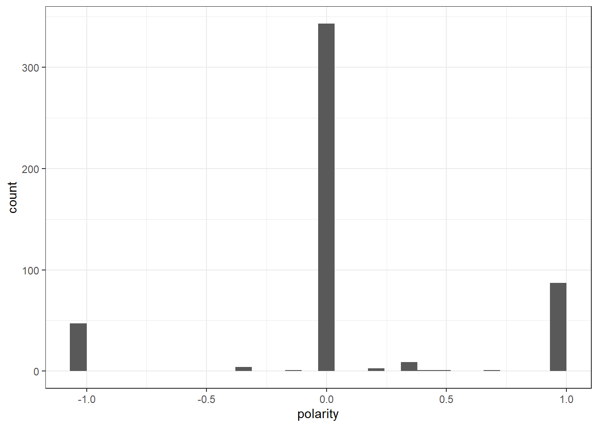
Diehl_text_df <-as.data.frame(Diehl_text_df)
DiehlCorpus_Polarity <-as.data.frame((cbind(Diehldf_nrc,Diehl_text_df)))DiehlCorpus_Polarity <- DiehlCorpus_Polarity %>%
select(c("polarity","Diehl_corpus"))
DiehlCorpus_Polarity$polarity <- recode(DiehlCorpus_Polarity$polarity,
"1" = "positive",
"-1" = "negative",
"0" = "neutral",)library(ggplot2)
library(lubridate)
library(reshape2)
Attaching package: 'reshape2'The following object is masked from 'package:tidyr':
smithslibrary(dplyr)
library(syuzhet)
library(stringr)
library(tidyr)
library(DT)Healy_csv <- read.csv("H_csv")
datatable(Healy_csv[1:50,], options = list(pageLength = 5)) Healy_csv$created_at <- ymd_hms(Healy_csv$created_at)
Healy_csv$created_at <- with_tz(Healy_csv$created_at,"America/New_York")
Healy_csv$created_date <- as.Date(Healy_csv$created_at)HealySentiment <- get_nrc_sentiment(Healy_csv$text)
Hall_senti <- cbind(Healy_csv, HealySentiment) #Combine sentiment ratings to create a new data frame
#show 50 messages rated by the NRC dictionary.
datatable(Hall_senti[1:50,17:29], options = list(pageLength = 5)) ### Summary statistics by group variables
Hall_senti$date_label <- as.factor(Hall_senti$created_date)
Hsenti_aggregated <- Hall_senti %>%
dplyr::group_by(date_label) %>%
dplyr::summarise(anger = mean(anger),
anticipation = mean(anticipation),
disgust = mean(disgust),
fear = mean(fear),
joy = mean(joy),
sadness = mean(sadness),
surprise = mean(surprise),
trust = mean(trust))
Hsenti_aggregated <- Hsenti_aggregated %>% pivot_longer(cols = -c(date_label), names_to = "variable", values_to = "value")
datatable(Hsenti_aggregated[1:50,], options = list(pageLength = 5)) Hsenti_aggregated$date_label <- as.Date(Hsenti_aggregated$date_label)
ggplot(data = Hsenti_aggregated, aes(x = date_label, y = value)) +
geom_line(size = 2, alpha = 2, aes(color = variable)) +
geom_point(size = 0) +
ylim(0, NA) +
theme(legend.title=element_blank(), axis.title.x = element_blank()) +
ylab("Average sentiment score") +
ggtitle("Sentiments on HEALEY Tweets before Election Day")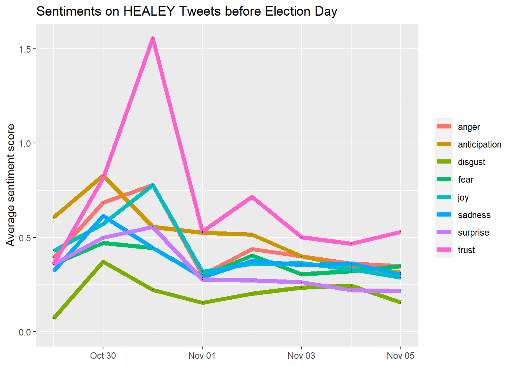
library(highcharter)Registered S3 method overwritten by 'quantmod':
method from
as.zoo.data.frame zoo title <- paste0("sentiment scores over time", Sys.Date())
highchart() %>%
hc_add_series(Hsenti_aggregated,"line", hcaes(x = date_label, y = value,group=variable)) %>%
hc_xAxis(type = "datetime") %>%
hc_title(
text = "Sentiments on Healey Tweets Before Election Day",
margin = 10,
align = "center",
style = list(color = "Black", useHTML = TRUE)
)library(tidytext)
library(textdata)Error in library(textdata): there is no package called 'textdata'library(tidyr)
Hcsv_clean <- Healy_csv %>%
dplyr::select(text) %>%
unnest_tokens(word, text)
Hsentiment_word_counts <- Hcsv_clean %>%
inner_join(get_sentiments("nrc")) %>%
dplyr::count(word, sentiment, sort = TRUE) %>%
ungroup()Error: The textdata package is required to download the NRC word-emotion association lexicon.
Install the textdata package to access this dataset.Hsentiment_word_counts %>%
group_by(sentiment) %>%
top_n(5) %>%
ungroup() %>%
mutate(word = reorder(word, n)) %>%
ggplot(aes(word, n, fill = sentiment)) +
geom_col(show.legend = FALSE) +
facet_wrap(~sentiment, scales = "free_y") +
labs(title = "Healey Tweet Replies Contribution to Sentiment",
y = "Contribution to sentiment",
x = NULL) +
coord_flip()Error in group_by(., sentiment): object 'Hsentiment_word_counts' not foundDiehl_csv <- read.csv("D_csv")
datatable(Diehl_csv[1:50,], options = list(pageLength = 5)) Diehl_csv$created_at <- ymd_hms(Diehl_csv$created_at)
Diehl_csv$created_at <- with_tz(Diehl_csv$created_at,"America/New_York")
Diehl_csv$created_date <- as.Date(Diehl_csv$created_at)DiehlSentiment <- get_nrc_sentiment(Diehl_csv$text)
Dall_senti <- cbind(Diehl_csv, DiehlSentiment) #Combine sentiment ratings to create a new data frame
#show 50 messages rated by the NRC dictionary.
datatable(Dall_senti[1:50,17:29], options = list(pageLength = 5)) ### Summary statistics by group variables
Dall_senti$date_label <- as.factor(Dall_senti$created_date)
Dsenti_aggregated <- Dall_senti %>%
dplyr::group_by(date_label) %>%
dplyr::summarise(anger = mean(anger),
anticipation = mean(anticipation),
disgust = mean(disgust),
fear = mean(fear),
joy = mean(joy),
sadness = mean(sadness),
surprise = mean(surprise),
trust = mean(trust))
Dsenti_aggregated <- Dsenti_aggregated %>% pivot_longer(cols = -c(date_label), names_to = "variable", values_to = "value")
datatable(Dsenti_aggregated[1:50,], options = list(pageLength = 5)) Dsenti_aggregated$date_label <- as.Date(Dsenti_aggregated$date_label)
ggplot(data = Dsenti_aggregated, aes(x = date_label, y = value)) +
geom_line(size = 2, alpha = 2, aes(color = variable)) +
geom_point(size = 0) +
ylim(0, NA) +
theme(legend.title=element_blank(), axis.title.x = element_blank()) +
ylab("Average sentiment score") +
ggtitle("Sentiments on DIEHL Tweets before Election Day")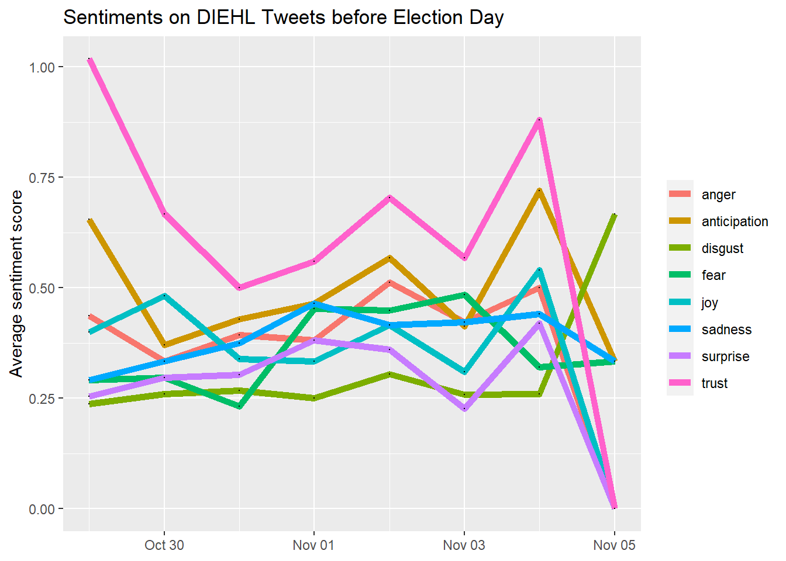
library(highcharter)
title <- paste0("sentiment scores over time", Sys.Date())
highchart() %>%
hc_add_series(Dsenti_aggregated,"line", hcaes(x = date_label, y = value,group=variable)) %>%
hc_xAxis(type = "datetime") %>%
hc_title(
text = "Sentiments on DIEHL Tweets Before Election Day",
margin = 10,
align = "center",
style = list(color = "Black", useHTML = TRUE)
)library(tidytext)
library(textdata)Error in library(textdata): there is no package called 'textdata'library(tidyr)
Dcsv_clean <- Diehl_csv %>%
dplyr::select(text) %>%
unnest_tokens(word, text)
Dsentiment_word_counts <- Dcsv_clean %>%
inner_join(get_sentiments("nrc")) %>%
dplyr::count(word, sentiment, sort = TRUE) %>%
ungroup()Error: The textdata package is required to download the NRC word-emotion association lexicon.
Install the textdata package to access this dataset.Dsentiment_word_counts %>%
group_by(sentiment) %>%
top_n(5) %>%
ungroup() %>%
mutate(word = reorder(word, n)) %>%
ggplot(aes(word, n, fill = sentiment)) +
geom_col(show.legend = FALSE) +
facet_wrap(~sentiment, scales = "free_y") +
labs(title = "DIEHL Tweet Replies Contribution to Sentiment",
y = "Words Contribution to Sentiments",
x = NULL) +
coord_flip()Error in group_by(., sentiment): object 'Dsentiment_word_counts' not found